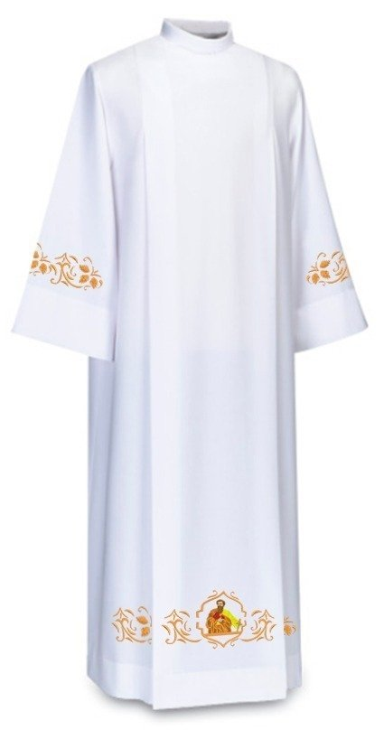
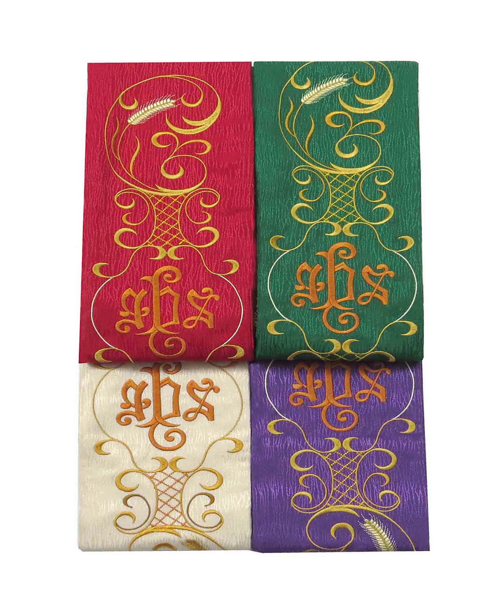
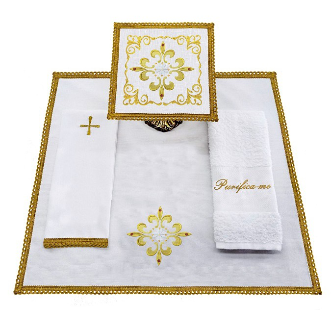

A túnica é conhecida como a indumentária que os clérigos trazem sob os demais paramentos para oficiar sacramentos e sacramentais. Não é um traje de uso corriqueiro, mas destinado especificamente para a ação ritual-celebrativa.
Lista de Presentes
Vocês estariam ajudando a missão na área hospitalar e nas paróquias, segue abaixo um Qr-code e a chave pix por extenso.
Caso queira presentear de outra forma, segue abaixo as medidas para roupas e afins
Medidas
- Camisa Polo: Tam - G
- Camisa Social: Tam - 4
- Calças: Tam - 46
- Sapatos: Tam - 41
Túnica
Estolas
A estola é uma faixa, normalmente de seda, com cerca de 2,0 metros de comprimento e simboliza os laços e algemas com as quais Jesus estava vinculado durante a sua Paixão. Também representa o poder e autoridade do sacerdote na celebração.
Casulas

A casula é uma veste tradicionalmente confeccionada em seda ou damasco, e é usada sobre a alva e a estola, para a celebração da missa. As cores desse paramento variam conforme o período do rito litúrgico em que a missa é celebrada.
Alfaia
As Alfaias Litúrgicas são os objetos separados para a celebração da Santa Missa. Eles estão a serviço do momento da Eucaristia e cada uma tem uma função especifica e especial.